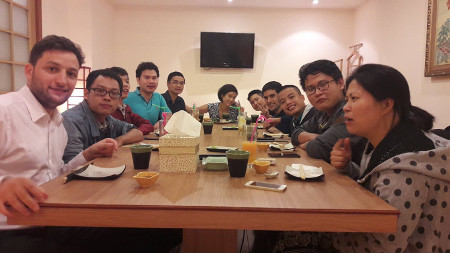

James@linagora

Speaker : Benoit Tellier
Why this presentation ?
Fast presentation of James
- Why choosing James?
- The Apache James project
- Architecture...
- ... and technical details
But...
... a bit of context first
Linagora
- French open source software development company
- Gives organization control on their internal communications
- Present in France, Vietnam, Tunisia and Canada
- OBM, OpenPaas, LinShare, LinId, etc..
In Hanoï
Since april 2015
Initiative like Open-Up! and La French Tech
- Opportunities:
- Developer Java, Scala or JS
- System administrator
Why James ?
The James project
Java Apache Mail Enterprise Server
- IMAP, SMTP, LMTP, POP3, Sieve, ManageSieve, etc..
- Linagora contributes since Septembre 2014
- Employees granted contributors since June 2015
- THE mail server backend supporting OpenPaas
Previously...
Cyrus IMAP
- A stable IMAP mail server
- BSD license
- OBM default email server
- Carnegie Mellon University started project in 1998
- Ready in 2002
But... Scalability...
Email protocols are connected
No shared storage -> Protocol aware load-balancing
Cyrus Murder to the rescue

But... Availability...
Maildir storage
Not officially supported by Cyrus
Need distributed filesystem or filesystem replication + failover
File locking support, efficient mmap implementation
Integration with AI for automatic filtering
Push calendars and contact to the app
Etc...
WebMail
Browser can not do IMAP / SMTP
Need for a proxy
Non standard protocols
James to the rescue!
JMAP

http://jmap.io
Apache, you said ?
From 1999
Numerous projects
Community of developers and users
Community requirements
The ASF board
Each project is autonomous
Common project hierarchy (user, developper, committer, PMC, chairman)
Common process: release, promossion
Shared infrastructure : Git, JIRA, Jenkins, mails, etc...
Linagora is the first James contributor
5 full time employees
~1.500 code contributions
- Cassandra backend improvement
- ElasticSearch backend
- JMAP implementation
- IMAP Quota + Mailbox annotation
- Mailet sanitizing
- Metrics
- Etc...
Project roadmap
- Deploy @openpaas.linagora.com
- New website
- V3.0 release
Arctitecture
James' subprojects

James' internals
Nowadays setup
Targetted distributed setup
Technical details
Java 6 VS Java 8

vs

- Default mailbox with OpenPaas
- CAP: Tradable availability/Consistancy
- Log structured merge tree: Write efficiency
- Data model: Tables with CQL
- Heavy use of CompletableFutures
- Default search backend with OpenPaas
- Consistent
- Updated via the mailbox event system
- Many information of emails
Testing strategy

- One code change -> one unit test
- Strong integration testing
- Use of testcontainers (docker)
Continuous integration
- Code defined ci
- Packaged with docker
- With complicated testing pipeline
- Retrieve the presentation
Mail processing: mailets
- Topology from XML files
- Many mailets/matchers provided
- You can write your owns!
Performance: gatling
Performance: live metrics
Web administration interface
- Brand new!
- Intoduced for Gatling provisionning
- We will integrate it with OpenPaas Admin...
- ... and add Quotas / RRTs
Questions?
Contact: Benoit Tellier
@benoittellier3 on medium
chibenwa on GitHub
btellier@linagora.com
Developer @linagora, Apache James PMC, Open-Up! speaker and VN tech advocate